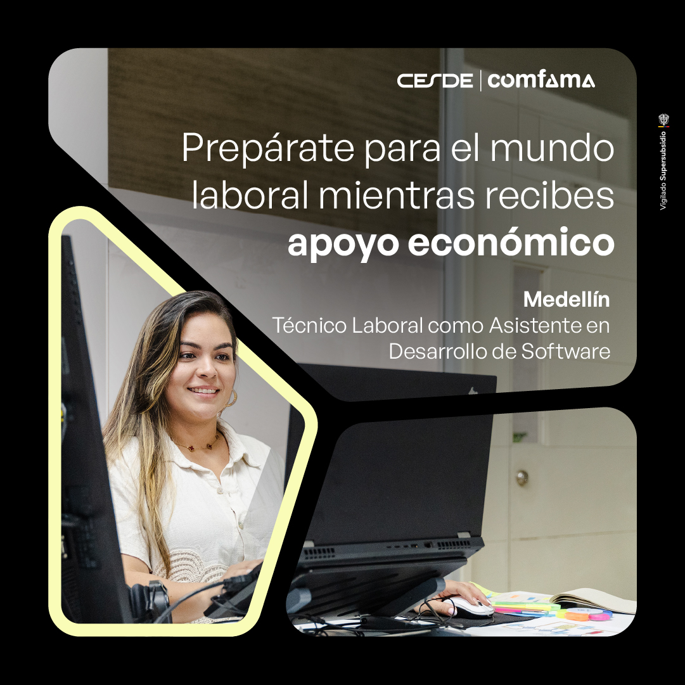
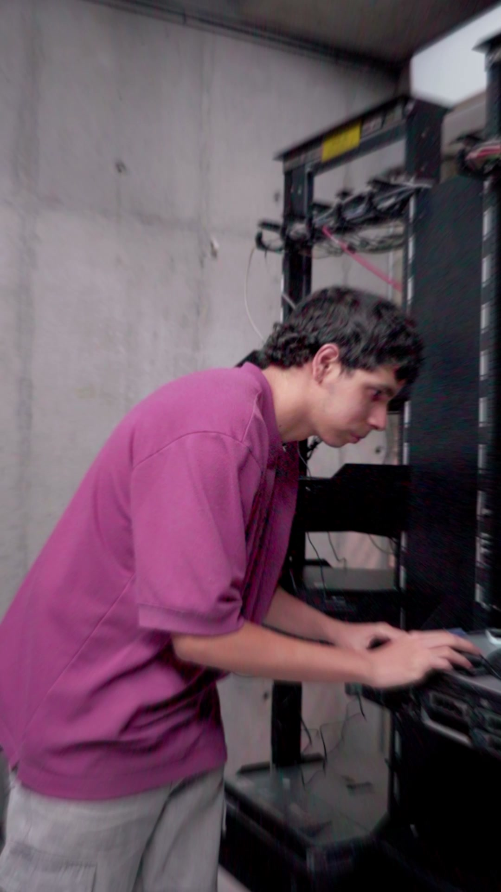
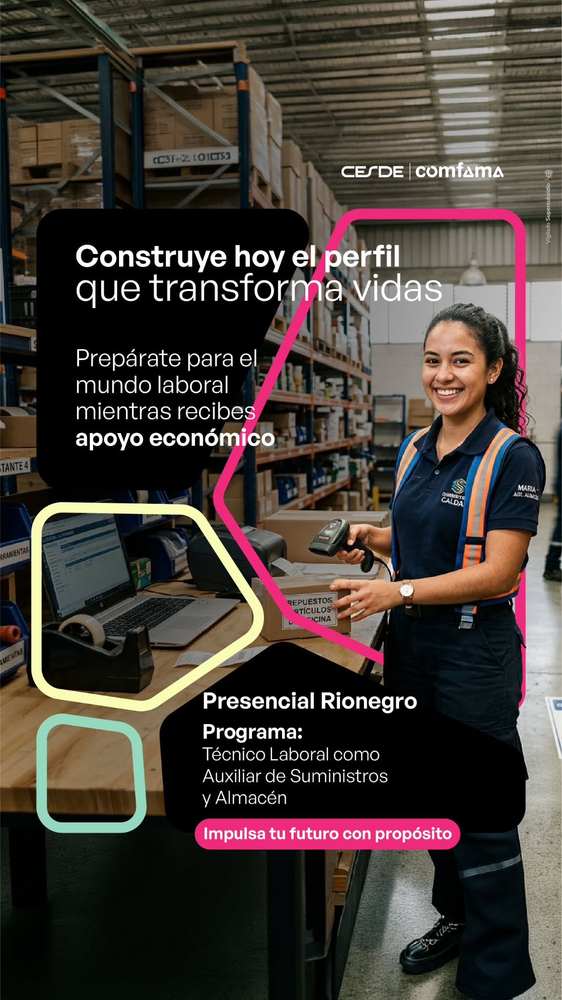

La pauta de Empresas generó 5.664 leads atribuidos en Meta con $27,77 millones de inversión. Las piezas incorporadas en octubre aportaron 1.267 leads, el 22,4% del total, usando el 28,7% de la inversión. Su costo agregado fue de $6.281 por lead, frente a $4.506 de las piezas anteriores; esta diferencia describe una mezcla de programas distinta, no un experimento controlado.
Dentro de los programas que sí tienen referencia, Software y Soporte de Sistemas mejoraron su costo por lead frente a los anuncios previos del mismo programa. Administrativo Bello entregó volumen importante, aunque a un costo superior al promedio general. Suministros y Almacén recién empezó a circular; Talento Humano estuvo casi todo el mes sin entrega y no permite concluir.
Del 1 al 12 de octubre hubo 153 leads diarios en promedio. Del 13 al 25 fueron 294 diarios. El aumento de volumen convivió con una inversión diaria mucho mayor y un costo por lead que subió de $4.150 a $5.264. Por eso, no se puede atribuir el salto de leads solamente a las piezas nuevas.
Leads y costo promedio del programa completo. La decisión se refiere al contenido, no implica cambios automáticos en la pauta.
| Programa | Leads | Costo por lead | Contenido que respondió | Decisión |
|---|---|---|---|---|
 Administrativo · MedellínPieza de septiembre Administrativo · MedellínPieza de septiembre | 683 | $2.166 | La pieza con EPM aportó 355 leads a $2.183 y la de septiembre, 311 a $2.141. Juntas explican casi todo el resultado. | Mantener ambas. Nequi solo tiene 17 leads; el video de septiembre gastó muy poco para evaluarlo. |
 Asesor Comercial · MedellínPieza de septiembre Asesor Comercial · MedellínPieza de septiembre | 899 | $7.044 | La imagen de septiembre logró 409 leads a $6.453. El video con el mismo texto sumó 292 a $7.535. | Priorizar la imagen. Revisar el video con calidad de lead antes de reducirlo; las piezas de Emtelco y Réditos tienen poco volumen. |
 Logística · MedellínPieza de julio Logística · MedellínPieza de julio | 502 | $4.254 | La pareja de julio reunió 434 leads a $4.145; la de septiembre, 55 a $5.107. El video de mediados de septiembre solo acumuló 13. | Mantener julio como base. Despriorizar septiembre hasta contar con una prueba más pareja. |
 Alimentos y Bebidas · MedellínPieza de julio Alimentos y Bebidas · MedellínPieza de julio | 563 | $3.783 | La imagen de julio produjo 318 leads a $3.657; el video de septiembre aportó 159 a $4.265. | Mantener ambas, con prioridad en julio. El video amplía volumen, pero debe justificar su mayor costo con calidad. |
 Desarrollo de Software · MedellínPieza de octubre | 778 | $6.286 | Las piezas del 01/10 generaron 510 leads a $5.894, frente a 268 a $7.033 de piezas previas del programa. | Mantener las nuevas. Despriorizar las anteriores si la calidad en CRM es comparable. |
 Soporte de Sistemas · MedellínVideo de octubre | 409 | $7.010 | El video nuevo produjo 277 leads a $5.419; la pieza anterior de Réditos, 132 a $10.348 con $1,37 M invertidos. | Mantener el video. Candidata a retirar: pieza anterior, tras comprobar que el CRM no muestre mejor calidad. |
| Administrativo · BelloPieza de octubre | 418 | $7.124 | La misma creatividad del 01/10 circuló en dos conjuntos y explica los 418 leads; no son dos conceptos distintos. | Mantener como prueba. Crear una variante más ligada al trabajo administrativo y comparar dentro de Bello. |
 Suministros y Almacén · RionegroPieza de octubre | 49 | $9.325 | Una pieza vertical del 22/10, con apenas cuatro días completos de entrega en este corte. | No descartar aún. Probar una pieza que muestre tareas del oficio y revisar el costo tras más días. |
| Talento Humano y Riesgo Laboral · MedellínPieza de octubre | 74 | $2.206 | El video anterior aportó 55 leads; las dos piezas del 01/10, 13 con solo $17 mil invertidos. | Sin ganador nuevo. La iniciativa está apagada; no descartar ni escalar por una muestra tan pequeña. |
Fuera de los programas individuales, las Charlas Informativas aportaron 585 leads a $2.515 y la charla general, 567 a $2.604. WhatsApp registró 137 acciones lead a $10.138; es un recorrido diferente y requiere revisar conversaciones útiles, no solo el costo por acción.
La combinación de patrocinio empresarial o apoyo económico, experiencia laboral y un programa identificable aparece en varias piezas que siguen generando leads: el reel de Charlas, la charla general, Administrativo, Logística y las nuevas de Software. En las charlas, el video que explica la posibilidad de estudiar mientras se gana experiencia fue el anuncio individual con mayor aporte: 523 leads. En Administrativo, la pieza de EPM y la de septiembre sostuvieron 666 leads juntas.
Esto no demuestra que una frase o un formato cause el resultado: las audiencias, la antigüedad y la inversión cambian entre anuncios. Sí marca una dirección de producción: conservar la promesa de apoyo económico, pero hacer más visible qué oficio se aprende y qué hará la persona. La pieza de Suministros, por ejemplo, ya menciona el programa en el texto, pero el mensaje visual principal comparte la misma promesa general que otras carreras; vale la pena probar un enfoque más específico.
Mantener: reel principal y charla general; Administrativo Medellín (EPM y septiembre); Logística de julio; Alimentos de julio y su video; Software y Soporte nuevos.
Ajustar o comparar: Asesor Comercial en video frente a la imagen; Administrativo Bello y Suministros con mensajes del oficio; las piezas de septiembre de Logística frente a julio.
Retirar solo con validación: la pieza anterior de Soporte es la candidata más clara por su mayor costo con inversión relevante. Reel #3, video de Administrativo y piezas nuevas de Talento Humano no tienen muestra suficiente para llamarlas fallidas.
El volumen de octubre no dependió solo de las piezas recientes. La entrevista corta de Charlas Informativas, la charla general de septiembre y la pieza de Asesor Comercial de septiembre aportaron juntas 1.401 leads, casi una cuarta parte del total. Además, las piezas anteriores de Administrativo Medellín, Alimentos y Bebidas y Logística siguieron captando a costos competitivos.
| Creatividad / programa | Antigüedad | Leads | Costo por lead | Lectura |
|---|---|---|---|---|
| Entrevista corta · Charlas Informativas | Junio | 523 | $2.508 | Mayor volumen individual. |
| Charla general · Empresas | Septiembre | 469 | $2.489 | Volumen con costo bajo. |
| Asesor Comercial · Medellín | Septiembre | 409 | $6.453 | Volumen alto, costo superior al promedio. |
| Administrativo EPM · Medellín | Agosto | 355 | $2.183 | Una de las fuentes más eficientes. |
| Alimentos y Bebidas · Medellín | Julio | 318 | $3.657 | Sigue sosteniendo resultados. |
| Administrativo · Medellín | Septiembre | 311 | $2.141 | Buen costo y escala. |
No todas estas iniciativas persiguen exactamente el mismo recorrido de conversión. Sus costos sirven para entender la composición del mes, pero la decisión de reemplazar o escalar una pieza debe compararse dentro de su programa y contrastarse con la calidad de los contactos recibidos.
Mantener Software y Soporte como señales favorables y revisar su calidad en CRM antes de ampliar inversión. En Bello, verificar cuántos de los 418 leads avanzaron para juzgar si su mayor costo se compensa. En Suministros, esperar más días y revisar el recorrido desde el clic hasta el contacto antes de concluir que la creatividad no funciona. Talento Humano necesita entrega real para evaluarse.
Fuente y alcance. Meta Ads, iniciativas de Empresas con gasto entre el 1 y el 25 de octubre de 2026, zona horaria de la cuenta. Corte consultado el 26/10. Se cuentan las acciones de tipo lead atribuidas por Meta, no matrículas ni leads confirmados en CRM. El 26/10 se excluye por estar incompleto.
Método. Inversión y leads se suman por anuncio; el costo por lead es inversión dividida entre leads. Las piezas nuevas se identifican por su nombre y fecha de publicación: 01/10, 15/10 y 22/10. Las comparaciones entre anuncios previos y nuevos son descriptivas: pueden diferir en fechas, audiencias, presupuesto y mensaje. Cuando una publicación y una historia comparten anuncio, estos datos no separan el resultado de cada formato. Miniaturas obtenidas de las creatividades de Meta y conservadas en este repositorio.